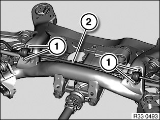
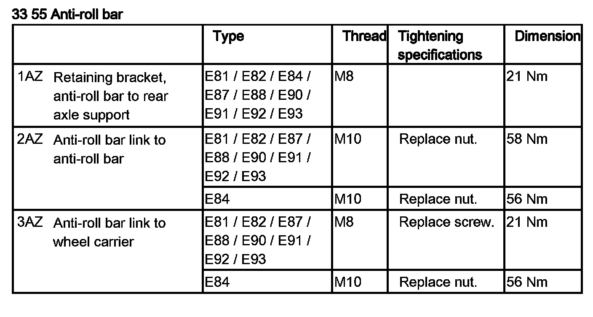

33 55 000 Removing and Installing/Replacing Rear Anti-Roll Bar
33 55 000 Removing and installing/replacing rear anti-roll barImportant!
M3:
When installing the anti-roll bar, make sure the two rubber mount halves are correctly installed and correctly engaged on both sides (in the retaining bracket).
Necessary preliminary tasks:
^ Remove both rear coil springs
^ Remove left control arm on wheel carrier
^ Remove both anti-roll bar links from anti-roll bar
^ Lower rear axle support

Note:
To simplify the picture, anti-roll bar removal is shown on the removed rear axle.
Release screws (1).
Remove both rubber mounts from anti-roll bar.
Turn anti-roll bar (2) and remove sideways.
Installation:
Check both rubber mounts for damage and replace if necessary.
Tightening torque 33 55 1AZ.
After installation:
^ Bleed braking system
